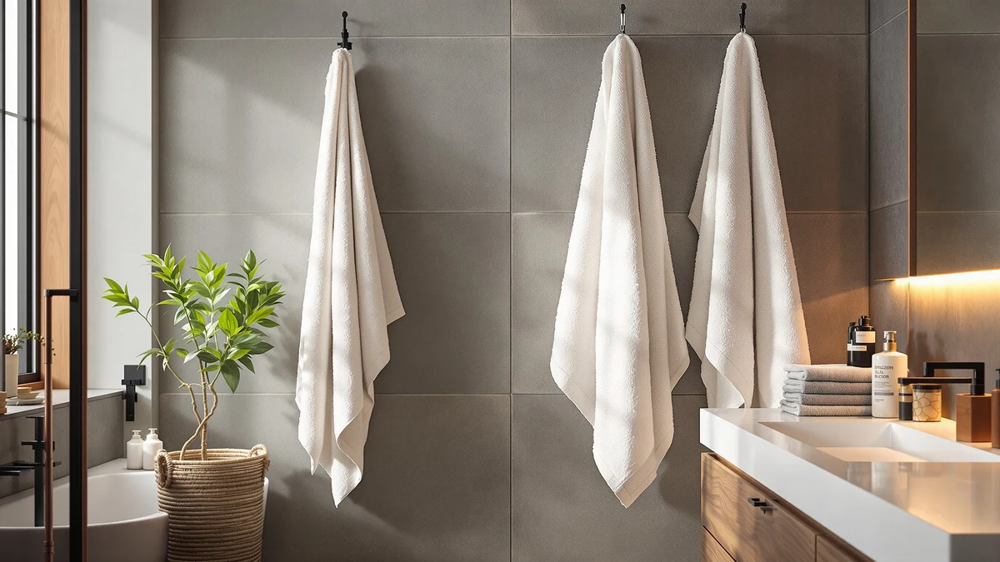

Amazon Basics 6 Pack Review (2026): Worth It?
Prices and picks verified as of October 2026. Independent, reader-supported reviews.


Quick Answer
This Amazon Basics 6 Pack review finds the Amazon Basics 6-Pack Bath Towels the strongest pick if you specifically need six matching full-size bath towels rather than a mixed set with hand towels and washcloths. Its 100% ring-spun cotton, 600 GSM construction costs more upfront than White Classic, American Soft Linen, or Cotton Paradise, but none of those three alternatives gives you six full bath towels for the price.
Our pick: Amazon Basics 6-Pack Bath Towels, $40.79 Check Price on Amazon
Bottom line: our top pick is the Amazon Basics 6-Pack Bath Towels at $40.79.
Things to Know Before You Buy
- All four sets compared in this Amazon Basics 6 Pack review list 100% cotton, but they split that cotton differently across bath towels, hand towels, and washcloths.
- Amazon Basics is the only set built entirely around six full 27 x 54 inch bath towels, with no hand towels or washcloths included in the box.
- At $40.79, Amazon Basics costs more than White Classic ($39.99), American Soft Linen ($33.99), or Cotton Paradise ($33.99). None of the three cheaper sets gives you six full bath towels, though.
- White Classic's towels are 700 GSM, heavier than the 600 GSM used in Amazon Basics, American Soft Linen, and Cotton Paradise.
- None of the four sets carry a published star rating or review count in the data we compared, so this review relies on listed specs, piece counts, and pricing rather than an aggregate rating.
This Amazon Basics 6 Pack review compares Amazon Basics' $40.79 set of six cotton bath towels against three similarly priced alternatives from White Classic, American Soft Linen, and Cotton Paradise. All four products list 100% cotton construction, but they differ in piece count, GSM weight, and how that cotton gets organized into bath towels, hand towels, and washcloths. Amazon Basics is also the only one of the four built entirely around full-size bath towels rather than a mixed set.
Shoppers researching an Amazon Basics 6 Pack review usually want to know whether six matching bath towels beat a mixed set that adds hand towels and washcloths at a similar price. White Classic, American Soft Linen, and Cotton Paradise all split their towel counts across bath towels, hand towels, and washcloths, while Amazon Basics puts every dollar into six full 27 x 54 inch towels. We weigh that structural difference, not the small gap in price, as the main factor in this comparison.
Why You Should Trust Us
We built this Amazon Basics 6 Pack review by comparing manufacturer specifications, listed pricing, and set composition for each ASIN rather than relying on marketing copy. Ilane Tall has covered bathroom textiles for Best Bath Towels, focusing on how GSM weight, cotton sourcing, and piece count hold up against what a brand actually lists for a product. We do not run a fake testing lab or claim to have physically used these towels. Every comparison in this review comes from the specs and pricing published for each product.
Our Research Experience
Rather than run these towels through a physical trial, we researched how each set stacks up against what buyers actually look for in bath towels: cotton type, GSM weight, piece count, and size. For an Amazon Basics 6 Pack review like this one, that means checking whether six full bath towels at 600 GSM beat a mixed set with hand towels and washcloths at a higher GSM, instead of assuming the higher-GSM option automatically wins. Cotton sourcing and piece composition tell you more than a GSM number by itself, and that is what this review weighs across all four sets.
Overview & Specs

Amazon Basics 6-Pack Bath Towels
What we like
- 100% ring-spun cotton construction across all six towels
- Every piece is a full 27 x 54 inch bath towel, not a mixed set
- Double-stitched, reinforced hems resist fraying from repeated laundering
- Hotel-quality weight and finish at 600 GSM
Flaws but not dealbreakers
- Costs more upfront than White Classic, American Soft Linen, or Cotton Paradise
- No hand towels or washcloths included, so you will need to buy those separately
- No published star rating or review count to check consistency against
| Material | 100% cotton |
| Size | Bath Towels - 6 Count |
Amazon Basics anchors this Amazon Basics 6 Pack review because it takes a different approach than the other three sets compared here. Instead of splitting six pieces across bath towels, hand towels, and washcloths, Amazon Basics puts all six pieces into full 27 x 54 inch bath towels. That makes it the set to buy if you specifically need matching bath towels for a guest bathroom, a rental property, or a household that goes through towels quickly, rather than a starter set for a bathroom that still needs hand towels and washcloths. The fabric is 100% ring-spun cotton at 600 GSM, a mid-weight spec that favors quicker drying over the plusher, heavier hand of a 700 GSM towel. Double-stitched hems add a practical touch aimed at frequent laundering, the kind of use the listing associates with hotels, spas, and vacation rentals.
At $40.79, Amazon Basics costs more than White Classic, American Soft Linen, or Cotton Paradise, each listed between $33.99 and $39.99. But none of those three alternatives gives you six full bath towels for that price, since all three spread their piece count across smaller hand towels and washcloths too. If your bathroom already has enough hand towels and washcloths and what you actually need is more full-size bath towels, Amazon Basics gets you six of them in one purchase instead of two or three from a mixed set. If you need a complete set with hand towels and washcloths included, one of the three alternatives in this Amazon Basics 6 Pack review will stretch further for the same money.
What We Liked
The clearest strength in this Amazon Basics 6 Pack review is the piece count. All six towels are full 27 x 54 inch bath towels, not a mix of bath towels, hand towels, and washcloths like the other three sets. For a guest bathroom, a gym bag rotation, or a household that burns through towels fast, six matching full-size towels solve a specific problem the mixed sets do not.
We also like that every towel in the set is 100% ring-spun cotton with double-stitched hems built for repeated washing. That construction lines up with the hotel, spa, and vacation-rental use the listing targets, where towels get laundered far more often than in an average household.
The alternatives hold their own on different strengths. American Soft Linen carries OEKO-TEX Standard 100 certification, which tests the finished product against more than 1,000 harmful substances. White Classic's 700 GSM Turkish cotton is heavier than the 600 GSM in the other three sets. Cotton Paradise matches American Soft Linen's GSM and cotton type at the same $33.99 price.
What Could Be Better
The main limitation in this Amazon Basics 6 Pack review is price relative to what else your bathroom might need. At $40.79, Amazon Basics costs between $0.80 and $6.80 more than the three alternatives, and none of that extra cost goes toward hand towels or washcloths. If your bathroom is missing those smaller pieces, you will end up buying them separately on top of this set.
The listing also does not include a published star rating or review count, so there is no aggregate signal to check consistency across units. White Classic, American Soft Linen, and Cotton Paradise share that same gap, so none of the four products in this comparison offer a rating to lean on. Without that signal, this comparison leans more heavily on the specs each brand actually lists, cotton type, GSM, and piece count, rather than on feedback from other buyers.
Who Is It For?
This Amazon Basics 6 Pack review points to one clear buyer: someone who needs several matching full-size bath towels at once and does not need more hand towels or washcloths right now. Rental properties, guest bathrooms, and households that do frequent laundering fit that description well.
If you are setting up a bathroom from scratch and need hand towels and washcloths along with bath towels, the three alternatives here get you a fuller set for less money. American Soft Linen and Cotton Paradise both list six pieces split across bath towels, hand towels, and washcloths at $33.99, and White Classic's 8-piece set adds two extra washcloths at $39.99.
Buyers who care about certification should look at American Soft Linen's OEKO-TEX Standard 100 label, which the other three products in this Amazon Basics 6 Pack review do not list. And if GSM weight matters most to you, White Classic's 700 GSM towels are heavier than the 600 GSM found in Amazon Basics, American Soft Linen, and Cotton Paradise. Color is another factor worth checking before you buy: Amazon Basics ships in white, American Soft Linen comes in light grey, and Cotton Paradise comes in beige, so match that against your bathroom before adding any of them to your cart.
Alternatives to Consider
If six matching bath towels is not the right format for your bathroom, this Amazon Basics 6 Pack review also covers three mixed sets that include hand towels and washcloths, all priced at $39.99 or less.

Editor's Pick
Luxury White Bath Towel Set
An 8-piece 700 GSM Turkish cotton set with 2 bath towels, 2 hand towels, and 4 washcloths for buyers who want a complete bathroom set.
$39.99
Check Price on Amazon
Best Value
American Soft Linen Luxury 6
A 6-piece OEKO-TEX certified Turkish cotton set at $33.99 for buyers who want a compared-for-substances guarantee.
$33.99
Check Price on Amazon
Premium Choice
Cotton Paradise 100% Cotton Turkish
A 6-piece 600 GSM Turkish cotton set that matches American Soft Linen's specs and price.
$33.99
Check Price on AmazonIs the Amazon Basics 6-Pack actually 100% cotton?
Yes.
How does the price compare to the alternatives?
At $40.79, the Amazon Basics 6-Pack costs more upfront than White Classic ($39.99), American Soft Linen ($33.99), or Cotton Paradise ($33.99), but it also includes six full bath towels instead of a mixed set with hand towels and washcloths.
Frequently Asked Questions
Is the Amazon Basics 6-Pack actually 100% cotton?
How does the price compare to the alternatives?
What's the difference between the Amazon Basics 6-Pack and the American Soft Linen set?
Final Verdict
This Amazon Basics 6 Pack review comes down to piece composition more than price. Amazon Basics is the pick for buyers who need six matching full-size bath towels and do not need more hand towels or washcloths right now, even though it costs a few dollars more than White Classic, American Soft Linen, or Cotton Paradise. If you need a complete set with smaller pieces included, one of those three alternatives will stretch further for less money. But for straightforward bath towel coverage, Amazon Basics is the set to buy.